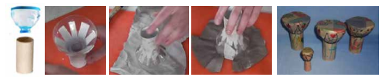

<div class="container">
  <div id="page1">
    <div>

      <h2>Déroulement</h2>

      <ol>
        <li>
          Récupérer le goulot d’une bouteille en plastique ainsi qu’un rouleau en carton.
        </li>
        <li>
          Découper sur le haut du tube cartonné des entailles de 4 centimètres environ et le fixer au goulot de la
          bouteille plastique à l’aide de colle chaude.
        </li>
        <li>Recouvrir de papier

          <ul>
            <li>Dessiner l’empreinte du djembé dans du papier kraft, découper très largement autour du rond et y
              découper
              des entailles.
            </li>
            <li>
              Déposer de la colle à papier peint sur les entailles, positionner le djembé dessus et rabattre les rebords
              pour prendre la forme arrondie.
            </li>
            <li>
              Recouvrir TOUT le djembé de papier, et réitérer l’opération 3 ou 4 fois pour bien le solidifier.
            </li>
          </ul>

        </li>


        <li>Personnaliser le djembé en le décorant.</li>
      </ol>

      <div class="text-center">
        
      </div>
    </div>
  </div>
</div>